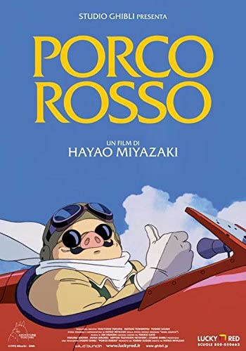

Title

Đặt vé
Porco Rosso
Đạo diễn:
Thịn Thịn
Thể loại:
Hoạt hình
Diễn viên:
Thịn
Ngày khởi chiếu:
30/02/2020
Thời lượng:
130p
Nội dung:
Bộ phim kể về câu chuyện của Porco Rosso và mối tình lãng mạn với Gina, người sở hữu và điều hành các câu lạc bộ cùng khách sạn biển dành cho phi công lái thủy phi cơ tại vùng biển Adriatic. Cốt truyện xoay quanh tình bạn giữa Porco và cô gái kỹ sư máy bay tập sự tài năng tên Fio, cùng cuộc cạnh tranh với mội phi công người Mỹ nóng tính tên Curtis. Porco bị một lời nguyền khiến mặt của ông bị biến thành heo nhưng nguồn gốc của lời nguyền này không được giải thích đầy đủ trên phim. Cho dù lời nguyền biến ông thành heo không bao giờ được giải thích đầy đủ trên phim nhưng nó có một gợi ý liên quan đến việc ông rời bỏ lực lượng không quân cũng như ý chí vượt qua cái chết khi nó đã gần kề vì người mình yêu...